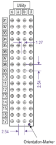
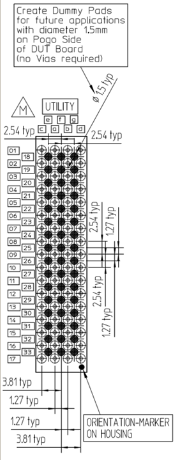
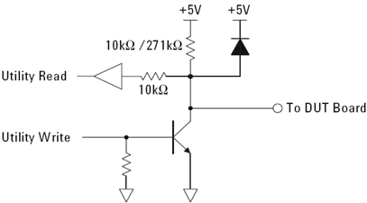
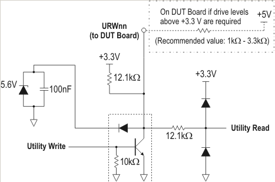

DUT board design changes for future utility line compatibility
Marc Moessinger, Advantest
Paper-ID: 141588 May 2013
Abstract
The V93000 utility lines are used for a number of tasks like switching relays or controlling circuits on a DUT board. To allow more flexibility in the future, the number of utility lines is being increased and the lines can be controlled by a sequencer. As a consequence new DUT boards should be designed in a way to support these new and future improvements. However, all changes have been made such that existing DUT boards can usually be used on any new tester.
For further details, please refer to the latest documentation within the Technical Documentation Center.
New pogo blocks for utility lines
All test heads with large DUT interfaces (DUT-Scale A-test head (DS-ATH), DUT-Scale Compact test head (DS-CTH), DUT-Scale Small test head (DS-STH) and Large test head (LTH)) will be orderable with either 128 utility lines or 256 utility lines. If 128 utility lines are ordered, the DUT interface will be equipped with a 2-row utility pogo block. If 256 utility lines are ordered, the DUT interface will be equipped with a new 4-row utility pogo block.
The physical pin positions (layout) of the 2-row pogo block are identical to the present version (rows a and b in Figure 1). The layout of the 4- row pogo block is shown in Figure 2. The additional 128 utility lines and the additional utility power (which will be delivered by an additional external utility power supply) are routed to the rows c and d.
The pin assignment of rows a and b remain identical for all types of pogo blocks. This ensures the compatibility of existing DUT boards with any utility line configuration.

Figure 2: Four row connector
To prepare the DUT board for future extension potentially using a 7 row pogo connector (for example, for 512 utility lines), it is recommended to add dummy pads to the DUT board. The PCB layout for the utility pogo block should look like the drawing as shown in Figure 3.

Figure 3: PCB layout for utility pogo block
Pull-up resistors requirement
Systems using the present type of utility lines (non‑sequencer‑controlled) contain an internal pull-up resistor to 5V. Figure 4 shows a simplified circuit of this type of utility lines.

Figure 4: Utility line circuit with internal pull-up resistor to 5V
Systems using the new type of utility lines (sequencer‑controlled) contain an internal pull-up resistor to 3.3V. Figure 5 shows a simplified circuit of this type of utility lines.

Figure 5: Utility line circuit with internal pull-up resistor to 3.3V
For logic requiring 5V levels it is essential to add additional pull-up resistors onto the DUT board. The recommended resistor value is between 1 kΩ and 3.3 kΩ connected to the 5V utility power supply.
For driving 5V logic circuits on a system with sequencer‑controlled utility lines, all utility lines on both the compatible inner rows and, if available, the additional outer rows require pull-up resistors. Boards with pull-up resistors will also work on systems with non‑sequencer‑controlled utility lines. For further details and specifications please refer to the Service Note (E8001-121017A) and the Technical Documentation Center.